| 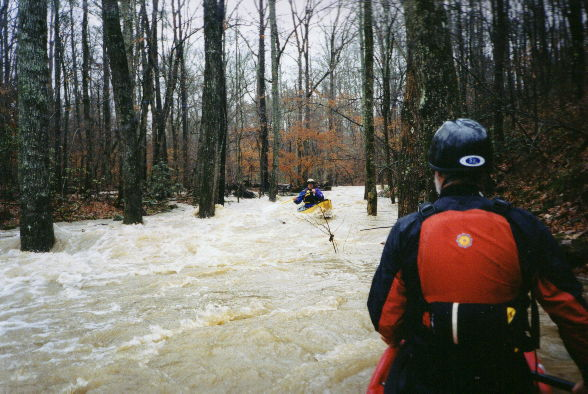 | The upper part with copious water. |
| 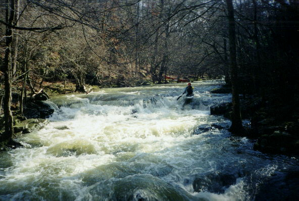 | A marginal lighting situation but a good view of the upper part of the first significant rapid. Once you hit the first horizon line, things get going. |
| 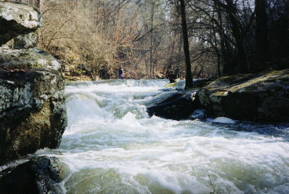 | Same rapid, different angle |
| 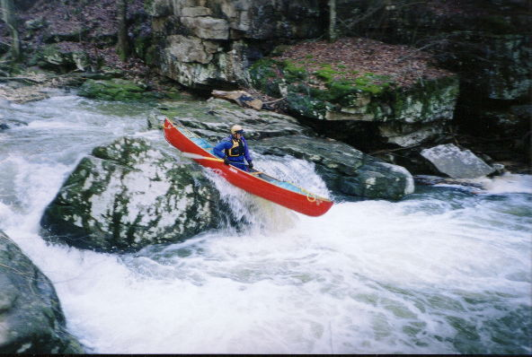 | Dave clears the center slot |
| 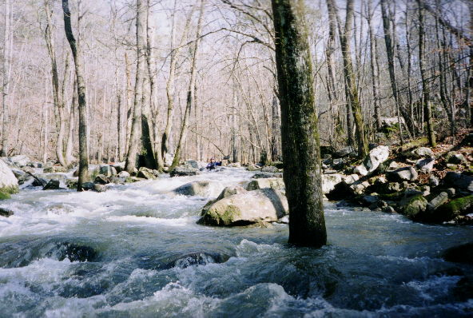 | Richard Brown amongst the rocks and trees. The creek splits here and more water would have been nice. All three canoeists had to employ the off bare hand brace technique here. |
| 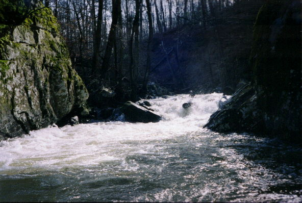 | Richard gets propelled right at the most significant drop. That rock on river right is a bit undercut. |
| 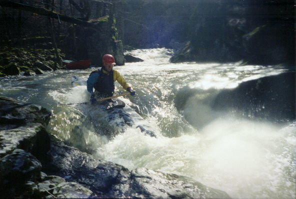 | The next rapid down, with water splotch on the lens. |
| 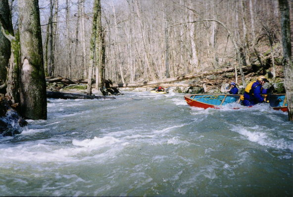 | Gary 'Log Probe' Holder is in the lead. You had to do the limbo some. What is Dave up to in the foreground? |
| 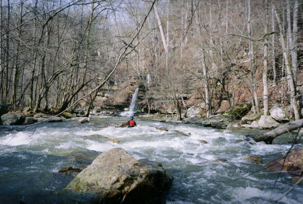 | Pretty. Not far above the sink. |
| 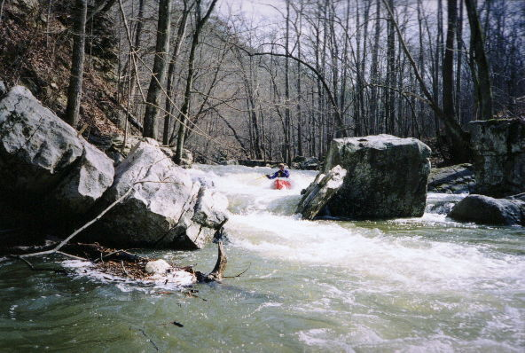 | Dave busts towards a wide slot |
| 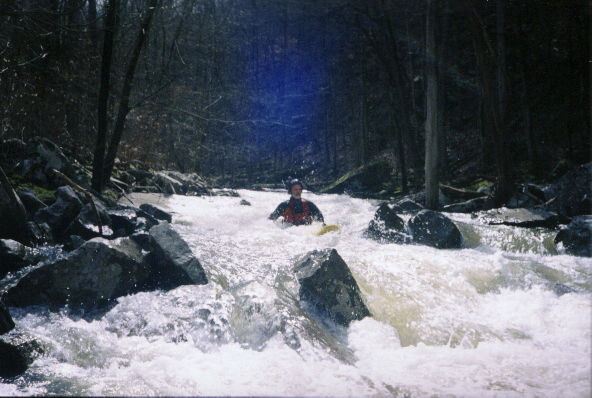 | Gary and his Phat (only slightly visible) |